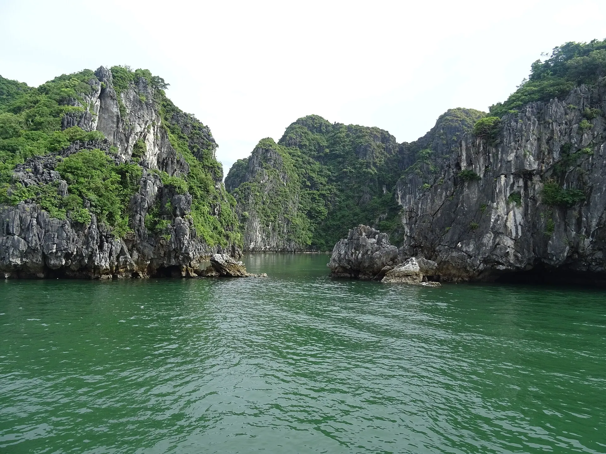

评分
4.7 / 5
最佳时间
4 月 – 9 月
建议停留
2 – 3 天
地区
越南北部
概览
为什么要去吉婆岛 – 兰夏湾？
吉婆岛是世界生物圈保护区，拥有原始森林国家公园、清澈的吉戈海滩和 400 多座石灰岩小岛组成的兰夏湾。兰夏湾比下龙湾更安静，适合划皮艇，以及在只能乘船抵达的小海滩游泳。
不可错过的亮点
- 兰夏湾
- 吉戈海滩
- 吉婆国家公园
- 炮台
天气与最佳季节
正在加载天气...
最佳时间: 4 月 – 9 月
点击月份查看是否适合出行
最佳季节
本月
所选月份
节日与季节亮点
-
Summer peak season 6月 – 8月
School holidays make beaches their busiest of the year.
Travel midweek and book early for better prices.
-
Rough-sea season 6月 – 9月
Monsoon winds bring rough seas; island tours and ferries may be cancelled.
Keep a spare day in case boats are cancelled.
农历节日每年日期不同——出发前请确认官方日期。
吉婆岛 – 兰夏湾之美
必吃美食
海防蟹汤粉
浓郁蟹汤配红米粉——港口城市的早餐。
吉婆岛 – 兰夏湾美食推荐
-
Phố hải sản Núi Ngọc
250k–600kGrilled geoduck, steamed crab, grouper
Đường Núi Ngọc, thị trấn Cát Bà 更新于 2026/09 报错 -
Chợ Cát Bà
150k–400kBuy seafood and have it cooked nearby
Đường 1/4, thị trấn Cát Bà 更新于 2026/09 报错 -
Bánh đa cua Cát Bà
35k–60kHai Phong-style red crab noodle soup
Thị trấn Cát Bà 更新于 2026/09 报错 -
Nhà bè Lan Hạ
300k–700kSeafood on floating rafts in Lan Ha Bay
Vịnh Lan Hạ (đi tàu) 更新于 2026/09 报错
再显示 4 个地点
-
Quán ốc bờ kè Cát Bà
100k–250kBabylon snails and razor clams
Bờ kè thị trấn Cát Bà 更新于 2026/09 报错 -
Bún cá cay Cát Bà
40k–60kSpicy fish noodle soup Hai Phong-style
Đường Núi Ngọc, Cát Bà 更新于 2026/09 报错 -
Nhà hàng hải sản Cái Bèo
250k–600kGrouper and geoduck at the fishing village
Làng chài Cái Bèo 更新于 2026/09 报错 -
Quán cơm Việt Hải
80k–150kCountry meals inside the national park
Làng Việt Hải 更新于 2026/09 报错
每人参考价格。点击地址可在 Google 地图查看营业时间和最新评价。
难忘的体验
兰下湾皮划艇
划过明暗洞，在 Ba Trai Dao 海滩游泳。
国家公园徒步
登上原始森林上方的 Ngu Lam 峰。
吉婆海滩游泳
三个 Cat Co 海滩由崖边步道相连。
炮台
在炮台顶上看日落。
旅行建议
- 从河内经 Got 码头的大巴+快艇联票约需 3–4 小时。
- 夏季周末非常拥挤——提早订房和船票。
行李清单
根据此目的地和月份推荐（在行程部分选择出发日期可更改月份）。勾选已打包的物品方便记忆。
发现价格、开放时间变了或店铺已关门？ 报错
吉婆岛 – 兰夏湾住哪里
Cat Ba town
400k–1.2M / 晚
Near Lan Ha Bay boats and restaurants.
Cat Co beaches
1.5M–3.5M / 晚
Right on the island's best beaches.
Viet Hai village
300k–700k / 晚
Inside the national park, very peaceful.
如何前往吉婆岛 – 兰夏湾
Hanoi – Cat Ba combo tickets (bus + speedboat) ~3.5 h; or from Hai Phong take the Binh – Cat Ba speedboat ~1 h.
两人一晚参考房价，春节、假日和周末更贵。Việt Travel 不从预订网站收取佣金。
吉婆岛 – 兰夏湾旅游行程
吉婆岛 – 兰夏湾旅游行程
Việt Travel · 海防 · 最佳时间: 4 月 – 9 月
选择日期可查看每日天气预报，并将行程添加到日历。
第 1 天: 吉婆岛
今日人均估算
门票: 40,000 VND
餐饮与咖啡: 335,000 VND – 770,000 VND
-
上午游览
- Travel Hanoi – Hai Phong
- Take the speedboat to the island and check in
-
午餐
Phố hải sản Núi Ngọc Grilled geoduck, steamed crab, grouper Đường Núi Ngọc, thị trấn Cát Bà · 250k–600k -
咖啡与午间休息
Cà phê đường ven vách đá Cát Cò Coconut water and smoothies over the sea Cat Co 1, 2, 3 beaches – cliff path附近 · 30k–60k -
晚餐与夜晚
Sunset at Cannon Fort and seafood at the fishing pier.
-
Cannon Fort 40,000 VND06:00–18:30 Núi Thần Công, thị trấn Cát Bà 更新于 2026/09 报错
-
-
返回住处
夜间散步片刻，然后回去休息
第 2 天: 兰夏湾
今日人均估算
门票: 350,000 VND – 700,000 VND
餐饮与咖啡: 235,000 VND – 570,000 VND
-
上午游览
Sail to Lan Ha Bay and kayak through the Light and Dark caves.
-
Lan Ha Bay tour – Sang Toi caves kayak 350,000 VND – 700,000 VND08:00–16:30 Bến Bèo, thị trấn Cát Bà 更新于 2026/09 Includes bay fee, kayak and lunch 报错
-
-
咖啡与午间休息
Quán nước bè làng chài Cái Bèo Iced tea and coconut water on a raft Cai Beo fishing village附近 · 15k–40k -
下午游览
Swim at Ba Trai Dao beach and visit Cai Beo fishing village.
- 全天开放 Cái Bèo, Cát Bà 更新于 2026/09 报错
-
饮品与小吃
Cà phê view vịnh Cát Bà Coffee and coconut water over the harbour Đường 1/4, thị trấn Cát Bà · 30k–70k -
晚餐与夜晚
Stroll the town's walking street and try crab noodle soup.
-
返回住处
夜间散步片刻，然后回去休息
第 3 天: 国家公园
今日人均估算
门票: 160,000 VND
餐饮与咖啡: 130,000 VND – 320,000 VND
-
早餐
如果早出发，可以带上法棍面包或糯米饭
-
上午游览
Trek in Cat Ba National Park and climb Ngu Lam peak.
-
Cat Ba National Park – Ngu Lam peak 80,000 VND07:00–17:00 Trung Trang, Cát Hải 更新于 2026/09 报错
-
-
咖啡与午间休息
Quán nước cổng VQG Cát Bà Lemonade or ginger tea after the climb Cat Ba National Park – Ngu Lam peak附近 · 15k–35k -
下午游览
Visit Hospital Cave and Trung Trang cave.
-
Hospital Cave 40,000 VND07:00–17:00 Xuân Đám, Cát Bà 更新于 2026/09 报错
-
Trung Trang cave 40,000 VND07:00–17:00 Trung Trang, Cát Bà 更新于 2026/09 报错
-
-
晚餐与夜晚
Dinner on a floating raft with night views of the bay.
-
返回住处
夜间散步片刻，然后回去休息
-
行程结束
行程结束：退房，购买当地特产后返程。
第 4 天: 猴岛 – 越海村
今日人均估算
门票: 100,000 VND – 150,000 VND
餐饮与咖啡: 125,000 VND – 250,000 VND
-
早餐
在住处吃早餐（常含在房费中）
-
上午游览
Speedboat to Monkey Island and its white-sand beach.
-
Monkey Island (speedboat) 100,000 VND – 150,000 VND08:00–17:00 Bến Bèo, Cát Bà 更新于 2026/09 Return speedboat 报错
-
-
下午游览
Cycle to Viet Hai village deep inside the national park.
- 全天开放 Việt Hải, VQG Cát Bà 更新于 2026/09 Bike hire ~50,000đ 报错
-
晚餐与夜晚
Seafood BBQ by the beach.
-
返回住处
夜间散步片刻，然后回去休息
-
行程结束
行程结束：退房，购买当地特产后返程。
第 5 天: 凤凰花之城海防
今日人均估算
门票: 免费
餐饮与咖啡: 45,000 VND – 100,000 VND
-
早餐
在住处附近当地人多的小店吃早餐
-
上午游览
Back to Hai Phong: the Opera House and Tam Bac old quarter.
- 全天开放 Quảng trường Nhà hát Lớn, Hồng Bàng, Hải Phòng 更新于 2026/09 报错
-
咖啡与午间休息
Cà phê phố Tam Bạc Coffee and lime tea by the Tam Bac river Hai Phong Opera House – Tam Bac old street附近 · 20k–45k -
晚餐与夜晚
- Hai Phong food tour: stick bánh mì
- Crab spring rolls
- Crab noodle soup
-
行程结束
行程结束：退房，购买当地特产后返程。
估算费用
明细：预算
-
住宿 Viet Hai village的Homestay（每间 300k–700k），两人分摊300,000 VND 2 晚 × 150,000 VND
-
餐饮 便宜的早餐和像Phố hải sản Núi Ngọc, Chợ Cát Bà这样的本地小店900,000 VND 3 天 × 300,000 VND
-
当地交通 租摩托车或乘巴士，两人分摊180,000 VND 3 天 × 60,000 VND
-
门票与活动 按行程的门票、游船和缆车630,000 VND 3 天 × 210,000 VND
明细：舒适
-
住宿 三至四星级酒店，双人间两人分摊760,000 VND 2 晚 × 380,000 VND
-
餐饮 中档餐厅、特色菜和海鲜1,620,000 VND 3 天 × 540,000 VND
-
当地交通 Grab、出租车或短程包车450,000 VND 3 天 × 150,000 VND
-
门票与活动 按行程，另含导览团/演出870,000 VND 3 天 × 290,000 VND
估算费用
明细：预算
-
住宿 Viet Hai village的Homestay（每间 300k–700k），两人分摊450,000 VND 3 晚 × 150,000 VND
-
餐饮 便宜的早餐和像Phố hải sản Núi Ngọc, Chợ Cát Bà这样的本地小店1,200,000 VND 4 天 × 300,000 VND
-
当地交通 租摩托车或乘巴士，两人分摊240,000 VND 4 天 × 60,000 VND
-
门票与活动 按行程的门票、游船和缆车840,000 VND 4 天 × 210,000 VND
明细：舒适
-
住宿 三至四星级酒店，双人间两人分摊1,140,000 VND 3 晚 × 380,000 VND
-
餐饮 中档餐厅、特色菜和海鲜2,160,000 VND 4 天 × 540,000 VND
-
当地交通 Grab、出租车或短程包车600,000 VND 4 天 × 150,000 VND
-
门票与活动 按行程，另含导览团/演出1,160,000 VND 4 天 × 290,000 VND
估算费用
明细：预算
-
住宿 Viet Hai village的Homestay（每间 300k–700k），两人分摊600,000 VND 4 晚 × 150,000 VND
-
餐饮 便宜的早餐和像Phố hải sản Núi Ngọc, Chợ Cát Bà这样的本地小店1,500,000 VND 5 天 × 300,000 VND
-
当地交通 租摩托车或乘巴士，两人分摊300,000 VND 5 天 × 60,000 VND
-
门票与活动 按行程的门票、游船和缆车1,050,000 VND 5 天 × 210,000 VND
明细：舒适
-
住宿 三至四星级酒店，双人间两人分摊1,520,000 VND 4 晚 × 380,000 VND
-
餐饮 中档餐厅、特色菜和海鲜2,700,000 VND 5 天 × 540,000 VND
-
当地交通 Grab、出租车或短程包车750,000 VND 5 天 × 150,000 VND
-
门票与活动 按行程，另含导览团/演出1,450,000 VND 5 天 × 290,000 VND
不含前往吉婆岛 – 兰夏湾的机票/交通。参考价格，随季节变动。
想去多个地方？把吉婆岛 – 兰夏湾和其他目的地组合起来吧。
分享你的经历
读者照片
还没有照片——来第一个分享你在吉婆岛 – 兰夏湾的瞬间吧！
分享你的照片